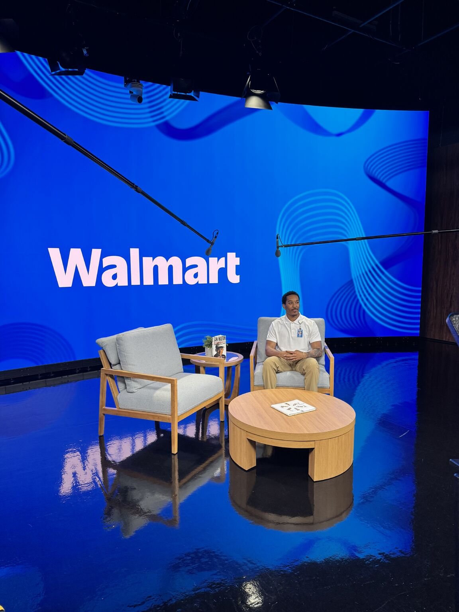
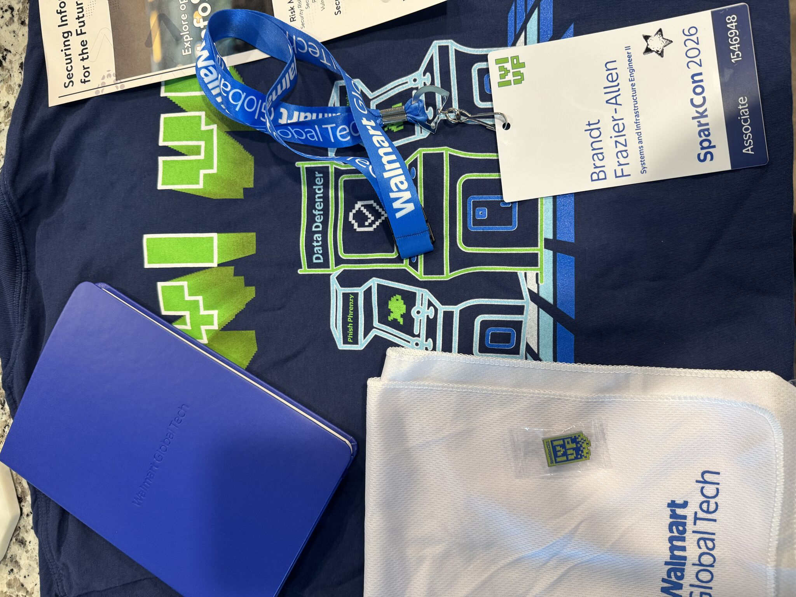
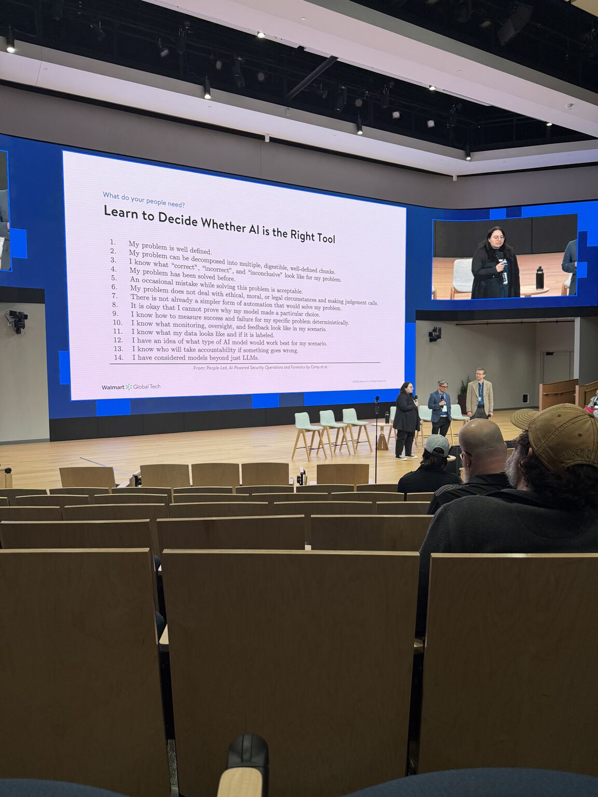

Thoughts, experiences, and lessons from my journey into cybersecurity, systems engineering, and professional growth.
Posted June 2025
Had a great time filming at the Walmart studio with Alex Lovell and the awesome crew.

We recorded a short video introducing suppliers to EDI—what it is, key features, and how to get started if you haven’t already.
It’ll be used as part of a periodic webinar series that includes a live Q&A so suppliers can ask questions in real time.
It was cool getting a behind-the-scenes look at how much goes into these productions. The team made it easy, and the whole experience was fun from start to finish.
Big thanks to everyone involved. Excited to see how this helps more suppliers onboard and grow with us!
Posted April 2026
Yesterday I had the opportunity to attend Walmart #SparkCon, and it was honestly one of the most insightful events I've been to.


Hearing from leaders across Walmart and the industry on topics like payment card fraud, zero trust, modern offensive security, and the impact of AI and quantum computing on cybersecurity really opened my eyes to how fast the space is evolving.
Beyond the sessions, getting the chance to talk with vendors and see different tools in action gave me a better understanding of what’s actually being used in the field today.
More importantly, I had some great conversations with associates in InfoSec who shared advice and guidance on transitioning into cybersecurity within Walmart. I really appreciate everyone who took the time to speak with me and offer insight.
Experiences like this continue to reinforce my interest in moving into the InfoSec space, and I’m excited to keep learning, building, and growing in this direction.